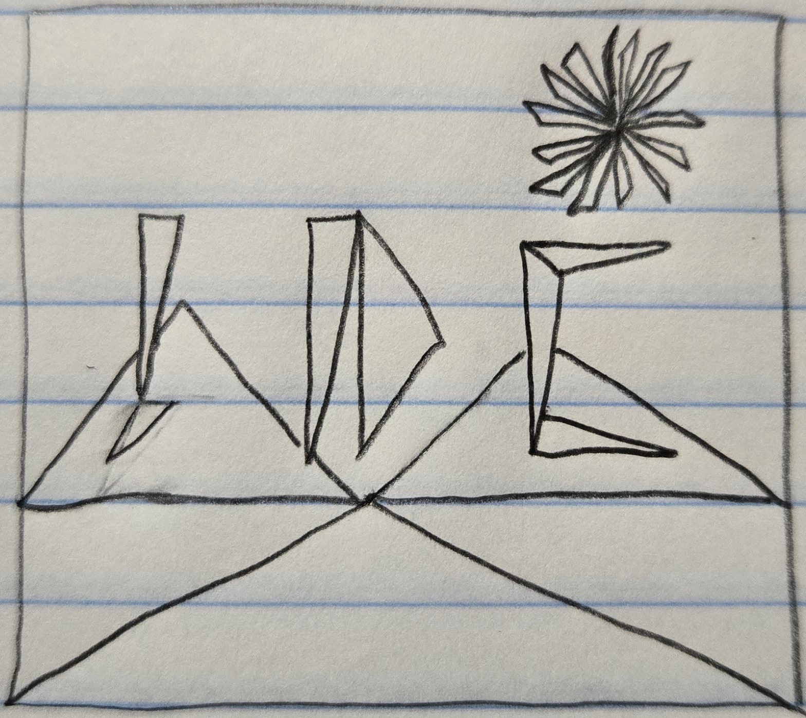

Drawing Mode:
Color & Alpha:
Shape Size:
Circle Segments (3-40):
Jonathan Cody
jdcody@ucsc.edu
Notes: Detailed picture uses 25+ triangles. Initials JDC are Red, Green, and Blue. Implemented Alpha blending and full-spectrum Rainbow Mode.
Original Hand-Drawn Sketch:
jdcody@ucsc.edu
Notes: Detailed picture uses 25+ triangles. Initials JDC are Red, Green, and Blue. Implemented Alpha blending and full-spectrum Rainbow Mode.
Original Hand-Drawn Sketch:
